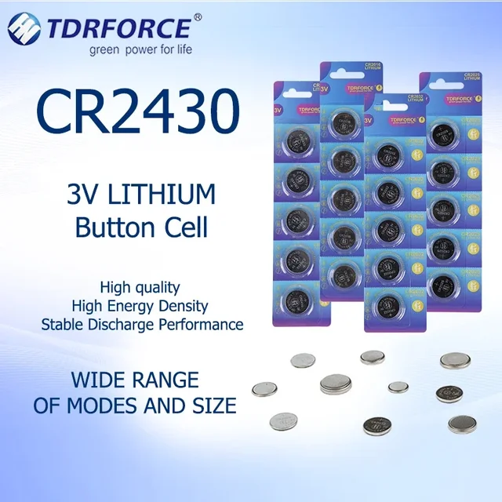
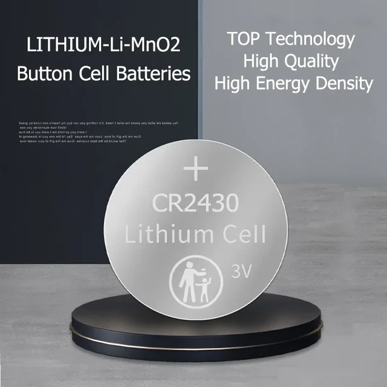
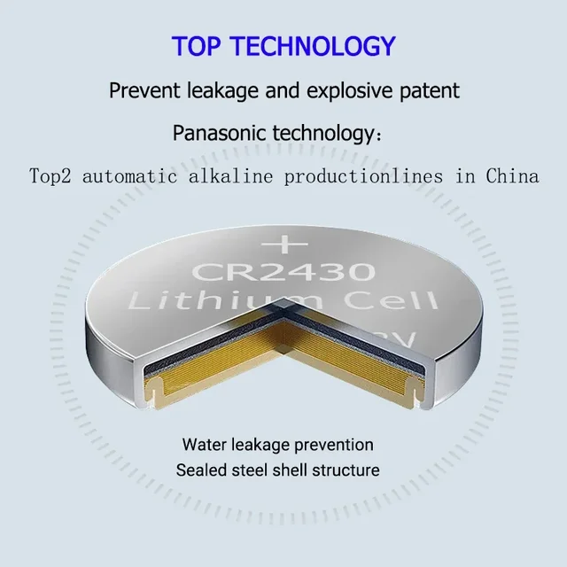
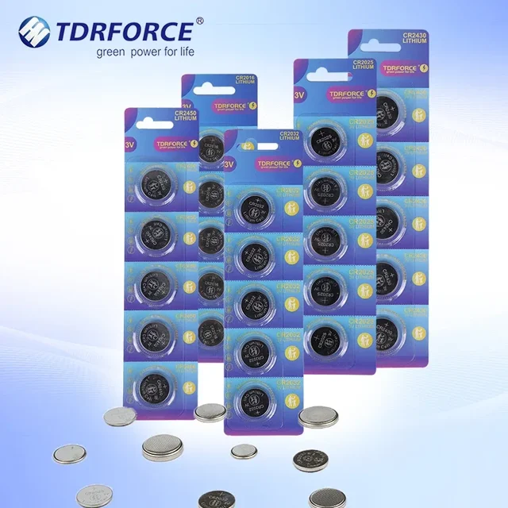
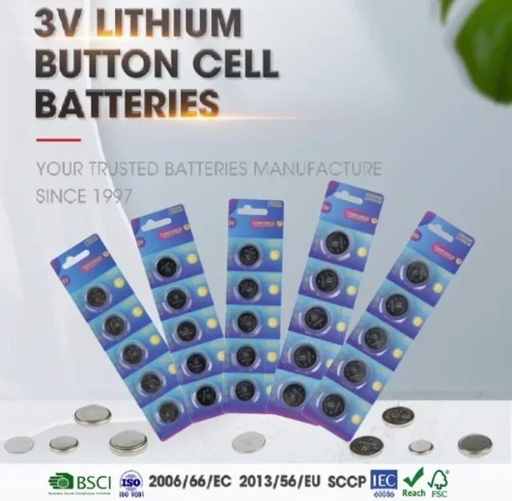
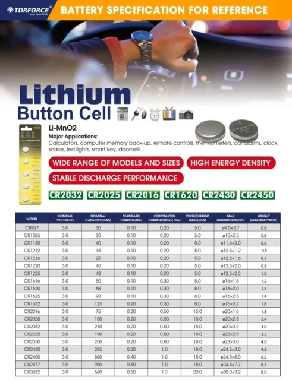
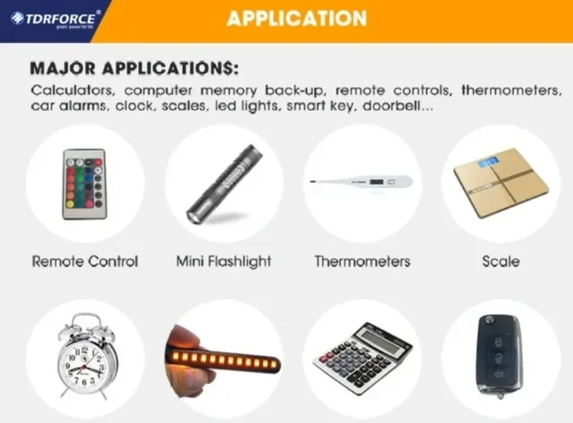
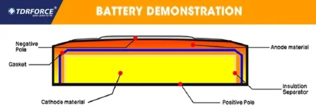
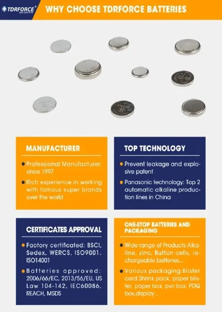
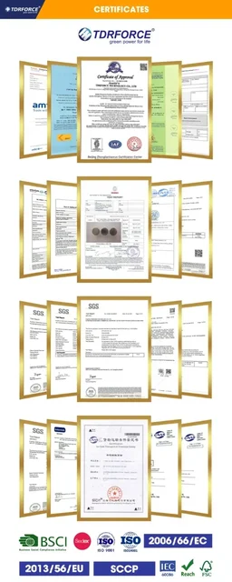

2-20PCS CR2430 3V Lithium Battery Button Coin Batteries 285mAh High Capacity Electronic Batteries for Watch Clock Toys Remote
Orders will be shipped within 3 days and will arrive within 15-30 days.
Specification:
Model: CR2430
capacity: 285mah
Standard Voltage: 3V
Applications
Used with toys, calculators, laser pointers, cameras, clocks, watches, computers, games, digital cameras, camcorders, PDAs, remote controls, electronic instruments, MP3 players, digital voice recorders, blood glucose meters, cholesterol testing meters, LED lights and other electronic appliances.
Features:
Using modern technology of environmental protection, safe, leakproof and trustworthy batteries.
ISO9001,ISO140001,CE,IEC60086,BSCI,2013/56/EU safety certificates passed.
High energy density, long life expantancy.
Providing power, quality for everyday devices.
Tips:
Due to the unique nature of the product, we will choose a special logistics method to deliver the goods. Don't worry about the goods not being delivered. If you don't know where to look for logistics tracking information, please contact customer service. We will select the appropriate logistics channel based on your requirements.









